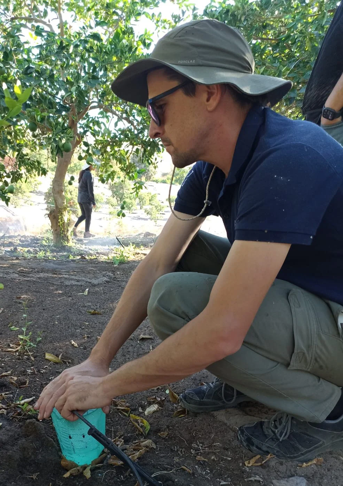
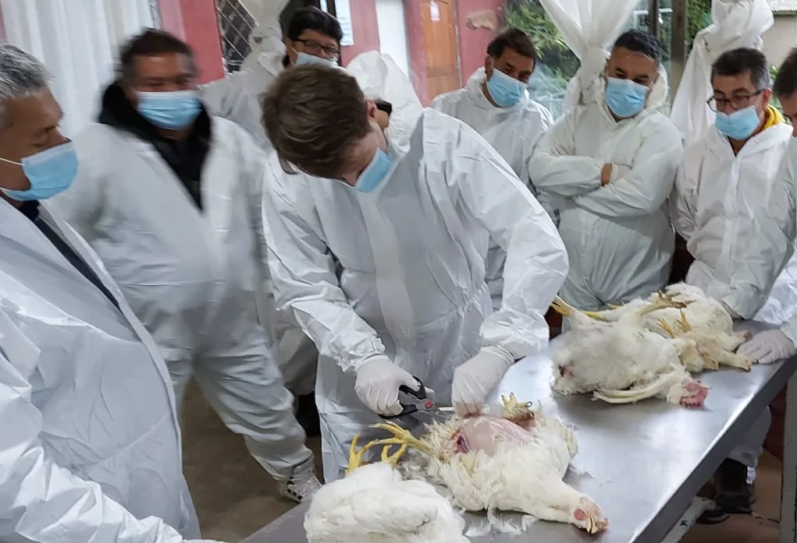

Huerto con baja uniformidad de aplicación
Intervención: aforo, revisión de presiones, diagnóstico de uniformidad y programación de riego. Entregable: plan de corrección priorizado para administración y equipo de campo.
Diagnóstico, implementación y seguimiento en terreno para empresas agrícolas, granjas, plantas de alimentos e instituciones.
Riego, fertirriego, inocuidad, bioseguridad, producción y capacitación con diagnóstico técnico y acciones ejecutables.
Diagnóstico de presión, aforo, uniformidad y programación para corregir brechas del sistema.
Solicitar diagnóstico agrícolaPlan de fertilización, seguimiento y medición en terreno con soporte IMACIMUS cuando aplica.
Evaluar fertirriegoRevisión de sistema, priorización de hallazgos y plan ejecutable para plantas de alimentos.
Revisar brechasAsesoría práctica para crianza, postura, registros, bioseguridad y toma de decisiones.
Evaluar granjaSoporte técnico para orden operacional, inocuidad, calidad, rendimiento y cumplimiento.
Consultar plantaTalleres y cursos para equipos agrícolas, plantas, OTEC e instituciones, con foco práctico.
Cotizar capacitaciónLíneas de trabajo enfocadas en producción agrícola, producción animal y procesos/calidad,.

Diagnóstico en terreno para optimizar agua, nutrición y manejo productivo.

Soporte técnico para granjas, plantas de alimentos y operaciones pesqueras.
Ejemplos de intervención: problema, acción técnica y entregable esperado.
Intervención: aforo, revisión de presiones, diagnóstico de uniformidad y programación de riego. Entregable: plan de corrección priorizado para administración y equipo de campo.
Intervención: revisión documental, observación de proceso y matriz de brechas. Entregable: plan de acción correctivo con responsables, prioridad y criterio técnico.
Intervención: capacitación práctica en terreno o planta. Entregable: contenidos aplicados al proceso real, pauta de verificación y recomendaciones operativas.
Levantamiento, diagnóstico, priorización y plan de acción con entregables claros.
Problema, contexto, urgencia, rubro y responsables.
Revisión en terreno, datos, documentos o proceso.
Priorización técnica según riesgo, impacto y factibilidad.
Acciones concretas, responsables y secuencia de trabajo.
Acompañamiento, capacitación o soporte técnico según alcance.
Conclusiones, recomendaciones y próximos pasos.
Asesoría técnica agropecuaria con foco en decisiones aplicables. Patrick lidera riego, fertirriego y agricultura de precisión; Andrew lidera inocuidad alimentaria, producción avícola y calidad en pesqueras. El trabajo se ejecuta directamente con responsables de operación, sin intermediarios.